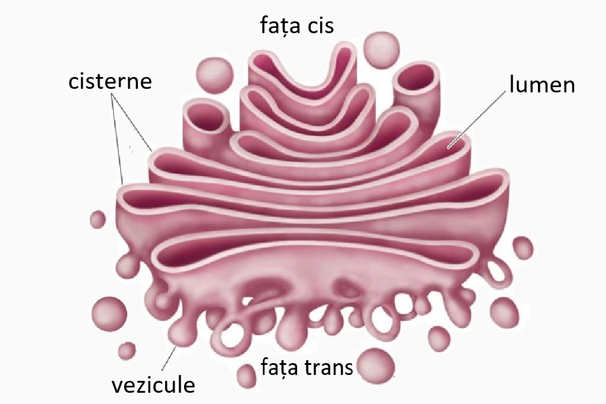

II. Celula
Noțiuni introductive
celula = unitatea structurală și funcțională a lumii vii.
citologia = știința care studiază morfologia, anatomia și fiziologia celulei.
Forma celulelor:
- Sferice
- Ovale
- Cubice
- Cilindrice
- Prismatice
- Stelate
Dimensiunea celulelor este de ordinul micronilor: 10-100μm;
Celula procariotă
Structură:
- PERETE CELULAR
- lipoproteic;
- rigid;
- conține MUREINĂ;
- acoperit de o teacă gelatinoasă polizaharidică = GLICOCALIX;
- MEMBRANĂ CELULARĂ
- lipoproteică;
- are învaginări = MEZOZOMI cu rol în respitația celulară și legarea cromozomului;
- permite schimburile cu mediul.
- CITOPLASMĂ - conține doar ribozomi.
- NUCLEOID
- nu are: membrană nucleară și nucleoli.
- reprezentat de o moleculă de ADN circular: cromozom bacterian.
Celula eucacariotă
Alcătuire:
- Învelișuri celulare
- Perete celular;
- Membrană celulară;
- Citoplasmă;
- Nuclu.
I. Învelișurile celulei
- Peretele celular:
- înveliș extern la:
- alge -> conține celuloză;
- plante -> conține celuloză;
- ciuperci -> conține LIGNINĂ.
- ROL:
- asigură individualitate și solidaritare;
- oferă duritate și rezistență;
- dă formă celulei.
- Membrană celulară
- ROL:
- delimitează celula;
- dă formă celulei;
- protector;
- asigură schimbul de materie și energie dintre celule.
- prin învaginare asigură:
- compartimentarea interiorului celular;
- delimitarea organitelor celulare.
- structură:
- trilaminară;
- fosfolipidică;
- aspect de mozaic fluid: fosfolipide (strat extern și intern), proteine (globuloase și transmembranare).
II. Citoplasma are:
- o parte nestructurată = HIALOPLASMĂ (matrice + citoplasmă fundamentală = CITOSOL);
- o parte structurată:
- organite celulare;
- incluziuni citoplasmatice.
Organite celulare:
a. Ribozomii (granulele lui Palade)
- nu au membrană;
- pot fi liberi sau atașați membranei reticulului endoplasmatic.
- structură:
- ARN;
- proteine.
- ROL: sinteza proteinelor.
b. Reticulul endoplasmatic
- structură:
- vezicule puternic aplatizate = CISTERNE;
- rețea de tuburi.
- poate fi:
- neted (REN) -> sinteza de lipide, degradarea substanțelor nocive, transport;
- rugos (granular; REG) -> sinteza de proteine.
c. Aparatul Golgi
- alcătuire: vezicule aplatizate (cisterne) cu dilatații la capete =vezicule;
- localizare: în apropierea nucleului;
- ROL:
- biosinteza polizaharidelor;
- sinteza de membrane;
- producerea de secreții.

d. Mitocondriile
- alcătuire:
- ÎNVELIȘ MITOCONDRIAL: membrană externă și membrană internă, pliată(-> cute = CRISTALE);
- MATRIX MITOCONDRIAL cu: enzime oxido-reducătoare și aparat genetic propriu (ADN + ARN + ribozomi + enzime);
- ROL:
- biosinteza polizaharidelor;
- sinteza de membrane;
- producerea de secreții.
e. Lizozomii
- vezicule determinate de o membrană simplă;
- conțin enzime digestive =hidrolaze;
- ROL:
- nutriție - prin fagocitoză;
- imunitate.
f. Centrozomul
- organit caracteristic celulei animale;
- structură:
- 2 corpusculi perpendiculari = CENTRIOLI;
- masă plasmatică densă = CENTROSFERĂ;
- ROL: formarea formarea fusului de diviziune.
g. Vacuolele
- vezicule delimitate de o membrană simplă = TONOPLAST;
- ROL: depozitarea apei, a unor ioni, a substanțelor organice.
h. Plastidele
- organite specifice algelor și plantelor.
- clasificare:
- LEUCOPLASTE - nu au pigmenți și au rol în depozitarea substanțelor de rezervă;
- CROMOPLASTE - plastide colorate, se găsesc în petale și fructe;
- CLOROPLASTE - conțin clorofilă și au rol în fotosinteză.
III. Nucleul
- ROL:
- conține informația genetică a celulei;
- asigură transmiterea caracterelor ereditare;
- structură:
- înveliș nuclear: membrană externă (cu pori și ribozomi) și membrană internă;
- nucleoplasma (carioplasma) = substanța fundamentală ce conține: 1-2 nucleoli și cromonemata.

CROMONEMATA:
- alcătuită din ADN și proteine;
- formează fibrele de cromatină;
- o fibră de cromatină = un cromozom puternic despiralizat.
Nucleolii:
- alcătuiți din ADN,ARN, proteine, ribozomi;
- ROL: biogeneza ribozomilor;
Acizii nucleici:
- ADN = acid dezoxiribonucleic;
- ARN = acid ribonucleic;
- alcătuiți din nucleotide.
O nucleotidă conține:
- bază azotată;
- purinică: adenina (A) și guanina (G);
- pirimidinică: timina (T), citozina (C), uracil (U).
- un zahăr;
- riboză (în ARN);
- dezoxiriboză (în ADN).
- un radical fosfat.
ADN = macromoleculă. Poate fi:
- bicatenară;
- complementară (A=T, G=C).
ARN = moleculă monocatenară. Pate fi:
- ARN viral: material genetic la ribovirusuri;
- ARN celular:
- mesager (ARNm) -copiază informația dintr-o catenă de ADN = TRANSCRIPȚIE;
- ribozomal (ARNr) - intră în alcătuirea ribozomilor;
- de transport (ARNt) -transportă aminoacizii la locul sintezei proteice (ribozomi).
Cromozomii și fusul de diviziune
Fiecare specie are un număr caracteristic de cromozomi.
Exemplu:
- omul (2n=46)
- musculița de oțet (2n=8)
- ceapa (2n=16)
- cartoful (2n=48)
Un organism conține:
- celule somatice, diploide (2n);
- celule sexuale, haploide (n).
Un cromozom metafizic prezintă:
- două cromatide;
- centromer - cu ajutorul caruia cromozomii se prind de fibrele fusului de diviziune.
Diviziunea celulară poate fi:
- DIRECTĂ (AMITOZĂ):
- fragmentare (clivare);
- strangulare (gâtuire).
- INDIRECTĂ (CARIOCHINEZA):
- MITOZA;
- MEIOZA.
Ciclul celular cuprinde două etape:
- INTERFAZA:
- 90% din durata ciclului celular;
- are trei perioade:
- presintetică (G1):;
- are loc sinteza de enzime;
- cromozomii se decondensează;
- de sinteză (S): se dublează cantitatea de ADN și proteine;
- postsintetică (G2): sinteza unor proteine și ATP.
- DIVIZIUNEA PROPRIU-ZISĂ: 10% din durata ciclului nuclear
MITOZA:
- are loc în celulele somatice, diploide (2n);
- importanță:
- asigură creșterea și dezvoltarea organismului;
- înlocuiește celulele uzate și formează clone.
- schema mitozei:
FAZELE MITOZEI:
1. PROFAZA:
- condensarea cromozomilor, ce devin BRICOMATIDICI;
- dezorganizarea nucleolilor și a învelisului nuclear;
- apariția fusului de diviziune;
- prinderea cromozomilor, prin centromer, de fibrele fusului de diviziune.
2. METAFAZA:
- cromozomii bicromatidici sunt condensați la maxim;
- se așează în plan ecuatorial = PLACA METAFAZICĂ;
- la sfârșitul metafazei începe despărțirea în plan longitudinal a celor 2 cromatide ale fiecărui cromozom -> cromozomi monocromatidici.
3. ANAFAZIA:
- cromozomii monocromatici - atrași simultan spre cei doi poli ai celulei;
- se formează două plăci anafazice (la jumătatea drumului dintre centru și poli).
4. TELOFAZA:
- cromozomii monocromatidici ajung la polii celulei;
- se dezorganizează fibrele fusului de diviziune;
- se decondensează cromozomii;
- se reorganizează învelisurile nucleare și nucleolii.
MEIOZA:
- are loc numai în celulele sexuale (gameți);
- importanță:
- asigură variabilitatea organismelor;
- menține constant numărul de cromozomi caracteristici fiecărei specii.
- schema meiozei:
FAZELE MEIOZEI:
1. MEIOZA I = ETAPA REDUCȚIONALĂ, cuprinde patru faze:
a. PROFAZA I:
- cromozomii de organizează în perechi (unul matern și unul patern) numiți BIVALENȚI sau tetrade ecromatidice;
- cromozomii pereche se ating în puncte numite CHEASME, se rup și se realizează un schimb reciproc de gene = CROSSING-OVER;
- apariția fusului de diviziune;
- prinderea cromozomilor, prin centromer, de fibrele fusului de diviziune.
b. METAFAZA I:
- cromozomii tetracromatidici se alinează în planul ecuatorial al celulei = placă metafazică.
c. ANAFAZA I:
- perechile se separă;
- cromozomii bicromatidici merg spre poli;
- se amestecă cromozomii materni cu cei paterni, mixare denumită recombinare genetică intercromozomială (dansul lui Müller).
d. TELOFAZA I:
- la poli se formează doi nuclei cu număr redus la jumătate (n) de cromozomi bicromatidici.
2. MEIOZA II = ETAPA ECVAȚIONALĂ, cuprinde patru faze:
- seamănă cu mitoza;
- prezintă :PROFAZA II, METAFAZA II, ANAFAZA II, TELOFAZA II;
- la sfârșitul telofazei se formează 4 celule haploide (gameți) care nu se mai divid;
- în procesul fecundației, din contopirea a două celule haploide (ovul și spermatozoid) -> celula ou (zigot) și astfel se reface numărul constant de cromozomi.